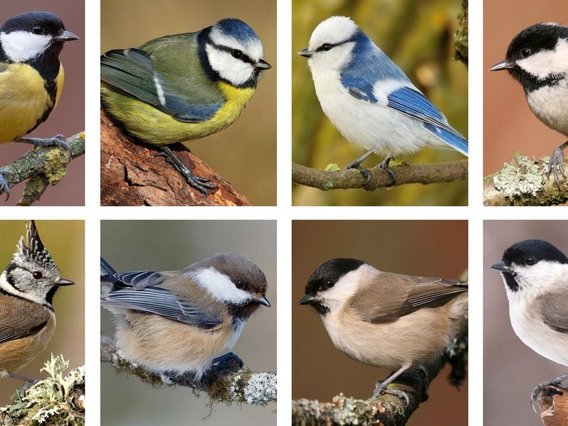

В Европе самая крупная птица Синица — размером примерно с воробья, имеет достаточно длинный хвост. Длина 13—17 см, масса 14—21 г, размах крыльев 22—26 см. Имеет довольно яркое оперение, среди других птиц выделяясь прежде всего ярко-жёлтым брюшком с «галстуком» — широкой чёрной полосой от груди до гузки.

На территории России обитает десять видов: большая синица (Parus major), восточная синица (Parus minor), хохлатая синица (Lophophanes cristatus), обыкновенная лазоревка (Cyanistes caeruleus), белая лазоревка (Cyanistes cyanus), московка (Periparus ater), буроголовая гаичка (Poecile montana), черноголовая гаичка. 